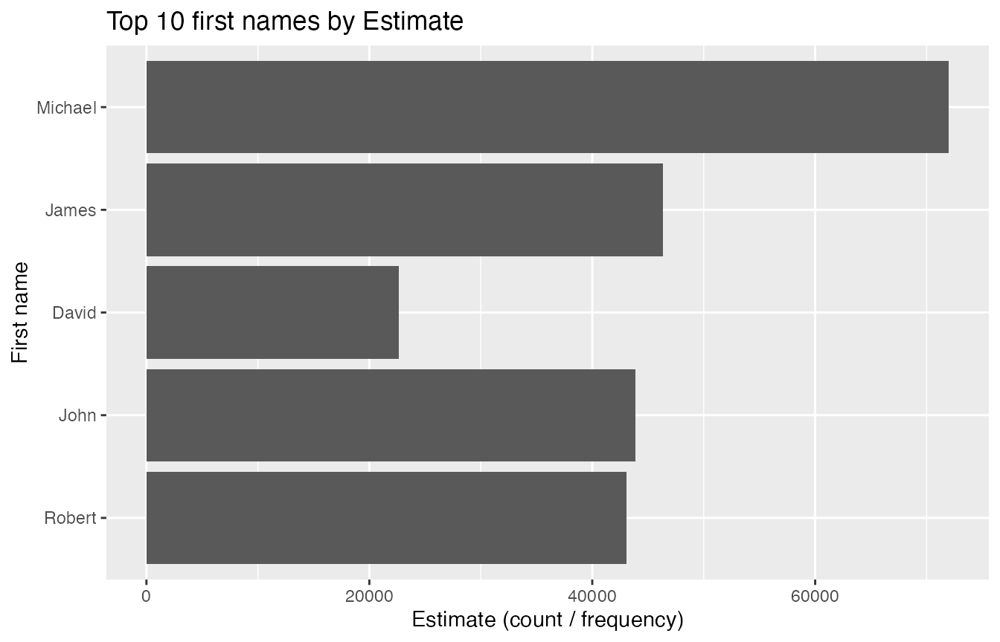

assignment4packages: Exploring Common Names
Trisha Aurielle Andrea
2025-10-19
Source:vignettes/assignment4packages-demo.Rmd
assignment4packages-demo.Rmd
remotes::install_github("ETC5523-2025/assignment-4-packages-and-shiny-apps-trishaandrea")
csv_path <- system.file(
"extdata",
"adjusted-name-combinations-list.csv",
package = "assignment4packages"
)
names_data <- read.csv(csv_path, check.names = FALSE)
head(names_data)
#> FirstName Surname Adjustment cleanName Estimate finalEstimate
#> 1 1 James Smith 21.1 james smith 25837.93 31289.74
#> 2 2 Michael Smith 5.6 michael smith 29275.91 30915.36
#> 3 3 Robert Smith 8.7 robert smith 24005.22 26093.67
#> 4 4 David Smith 10.8 david smith 22613.77 25056.06
#> 5 5 James Johnson 9.6 james johnson 20498.04 22465.86
#> 6 6 Michael Johnson -4.8 michael johnson 23225.50 22110.68
names_data <- names_data[, nzchar(names(names_data)), drop = FALSE]
colnames(names_data)
#> [1] "FirstName" "Surname" "Adjustment" "cleanName"
#> [5] "Estimate" "finalEstimate"
summarize_data(names_data)
#> Adjustment Estimate finalEstimate
#> 1 0.58425 6602.107 6426.914Visualise the most common first names in the dataset.
library(dplyr)
library(ggplot2)
top10 <- names_data |>
select(FirstName, Estimate) |>
filter(!is.na(FirstName), !is.na(Estimate)) |>
arrange(desc(Estimate)) |>
slice_head(n = 10)
ggplot(top10, aes(x = reorder(FirstName, Estimate), y = Estimate)) +
geom_col() +
coord_flip() +
labs(
x = "First name",
y = "Estimate (count / frequency)",
title = "Top 10 first names by Estimate"
) How to interpret: Taller bars indicate names that appear more frequently according to the chosen count column. Try switching to finalEstimate if you prefer the adjusted totals.
if (interactive()) {
run_app()
}
sessionInfo()
#> R version 4.5.1 (2025-06-13)
#> Platform: aarch64-apple-darwin20
#> Running under: macOS Sequoia 15.6.1
#>
#> Matrix products: default
#> BLAS: /Library/Frameworks/R.framework/Versions/4.5-arm64/Resources/lib/libRblas.0.dylib
#> LAPACK: /Library/Frameworks/R.framework/Versions/4.5-arm64/Resources/lib/libRlapack.dylib; LAPACK version 3.12.1
#>
#> locale:
#> [1] en_US.UTF-8/en_US.UTF-8/en_US.UTF-8/C/en_US.UTF-8/en_US.UTF-8
#>
#> time zone: Australia/Melbourne
#> tzcode source: internal
#>
#> attached base packages:
#> [1] stats graphics grDevices utils datasets methods base
#>
#> other attached packages:
#> [1] ggplot2_4.0.0 dplyr_1.1.4
#> [3] assignment4packages_0.0.0.9000
#>
#> loaded via a namespace (and not attached):
#> [1] gtable_0.3.6 jsonlite_2.0.0 compiler_4.5.1 tidyselect_1.2.1
#> [5] jquerylib_0.1.4 systemfonts_1.2.3 scales_1.4.0 textshaping_1.0.1
#> [9] yaml_2.3.10 fastmap_1.2.0 R6_2.6.1 labeling_0.4.3
#> [13] generics_0.1.4 knitr_1.50 htmlwidgets_1.6.4 tibble_3.3.0
#> [17] desc_1.4.3 bslib_0.9.0 pillar_1.11.1 RColorBrewer_1.1-3
#> [21] rlang_1.1.6 cachem_1.1.0 xfun_0.52 fs_1.6.6
#> [25] sass_0.4.10 S7_0.2.0 cli_3.6.5 withr_3.0.2
#> [29] pkgdown_2.1.3 magrittr_2.0.4 digest_0.6.37 grid_4.5.1
#> [33] rstudioapi_0.17.1 lifecycle_1.0.4 vctrs_0.6.5 evaluate_1.0.4
#> [37] glue_1.8.0 farver_2.1.2 ragg_1.4.0 rmarkdown_2.29
#> [41] tools_4.5.1 pkgconfig_2.0.3 htmltools_0.5.8.1